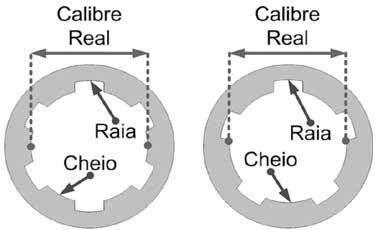

Capítulo 2.3 - Calibre das Armas e Munição
Índice
2.4 O calibre das armas de fogo e munição
Toda munição apresentada na forma de um cartucho é referida a um determi nado calibre, o qual indica o tipo particular de arma de fogo na qual a munição é utilizada. Trata-se de uma referência necessária, pois é comum a certos cartuchos apresentarem uma aparência externa quase idêntica e propriedades balísticas acentuadamente diferentes. De modo recíproco, muitas armas atuais, concebidas para usar uma munição específica, trazem em si uma referência expressa a respeito do calibre a ser utilizado. Quanto ao calibre das armas de fogo, há que distinguir os calibres para armas de fogo com almas raiadas (tratado a seguir), o qual consta do calibre real e do calibre nominal, e o calibre das armas de fogo com almas lisas e suas alterações por meio do choke (tratado na seção 4.5 - Estudo particular da espingarda).
2.4.1 Calibre em armas de alma raiada - calibre real
O calibre real de uma arma de fogo com alma raiada é uma medida tomada na boca do cano e corresponde ao diâmetro interno da alma. Assim, o calibre real é uma medida exata e aferível, expressa em milímetros, dentro da precisão dos instrumentos de medição. Tecnicamente, o calibre real corresponde à menor dimensão da alma do cano, devendo ser determinado pela medida entre dois cheios diametralmente opostos no sistema de raias (observar a nomenclatura na figura abaixo).

Figura 29 – Maneira correta de mediar o calibre real de uma arma
raiada com um número par de raias, à esquerda, e com um número ímpar de raias, à direita (Ilustração: Marcelo Jost). Quando o número de raias é par, tal tarefa é simples, visto que dois cheios estarão opostos um ao outro. Quando o número de raias é ímpar, entretanto, um cheio estará oposto a uma raia, devendo a medida do calibre real ser tomada entre a superfície de um cheio e a delimitação entre um cheio e uma raia em posição oposta, conforme a figura anterior.
2.4.2 Calibre em armas de alma raiada - calibre nominal
O calibre nominal é sempre designativo de um tipo particular de munição e também do tipo de arma que a utiliza. Assim, todo cartucho de munição apresenta, gravado na base do culote, o calibre nominal de uso. As armas, do mesmo modo, geralmente possuem gravado, no cano ou na lateral do ferrolho, o calibre nominal de munição que utilizam e para o qual foram concebidas Os calibres nominais são designados, conforme o tipo de medida utilizado, pelas suas respectivas frações de polegada ou milímetros, podendo haver diversos calibres nominais para um único calibre real. Além disso, há correspondência de medidas entre diversos calibres nominais diferentes, os quais podem ser utilizados na mesma arma. A figura abaixo mostra diversos projéteis de calibres nominais diferentes que apresentam calibre real próximo de 9 mm.

Figura 30 – Projéteis com calibres nominais diferentes
e calibres reais similares. As medidas de diâmetro dos projéteis são apresentadas em milímetros e centésimos de polegada. Os calibres nominais dos projéteis são: (A) .380” Auto, (B) 9x19mm, (C) .38” SPL e (D) .357” Magnum (Foto: Marcelo Jost). A indicação do calibre nominal de uma determinada arma serve como alerta para o atirador, o qual deve utilizar um cartucho de calibre correspondente. O uso de cartuchos nominais diferentes poderá causar danos à arma e ao atirador, sendo desaconselhado alterar as características originais da arma para que esta calce cartuchos de calibres nominais diferentes daqueles para os quais foi concebida. A tabela a seguir mostra algumas munições com calibres nominais diferentes, mas que podem ser utilizadas em uma mesma arma.
Tabela 1 - Munições e calibre nominais.
| Calibre Nominal Imperial | Calibre Nominal Métrico |
|---|---|
| .223” Remington | 5,56x45mm OTAN |
| .25” Auto | 6,35mm |
| .308” Winchester | 7,62x51mm OTAN |
| .32” Auto | 7,65mm |
| .380” Auto | 9 mm Curto |
Um exemplo comum deste tipo de alteração é a adaptação, por meio do aumento do comprimento da câmara do tambor ou cano, de um revólver calibre .38” em um revólver capaz de disparar cartuchos calibre .357”. Tal adaptação não leva em conta, entretanto, que um tambor de revólver .38” não possui a resistência necessária para suportar as pressões elevadas de um cartucho .357”, o que pode levar a acidentes graves envolvendo a explosão do tambor ou câmara, podendo ferir gravemente o atirador.
2.4.3 Calibre nominal e classificação legal
A legislação nacional estabeleceu a energia de disparo como critério para classificação de armas de fogo e munição em uso permitido ou restrito (havendo ainda classificação como armas obsoletas ou proibidas) – Ver DECRETO Nº 11.615, DE 21 DE JULHO DE 2023. Baseado nos limites de energia estabelecidos, e considerando a classificação das armas de fogo quanto à alma do cano, modo de funcionamento e à mobi lidade, portarias conjuntas do Exército e da Polícia Federal listaram os calibres nominais de uso permitido e restrito, a saber:
- PORTARIA CONJUNTA - C EX/DG-PF Nº 2, DE 6 DE NOVEMBRO DE
2023. Disponível em: <https://www.in.gov.br/en/web/dou/-/portaria -conjunta-c-ex/dg-pf-n-2-de-6-de-novembro-de-2023-522877171>. Acesso em: 24/04/2026.
- PORTARIA CONJUNTA-C Ex/DG-PF Nº 3, DE 29 DE AGOSTO DE 2024.
Disponível em: < https://www.in.gov.br/web/dou/-/portaria-conjunta-c -ex/dg-pf-n-3-de-29-de-agosto-de-2024-582340725 >. Acesso em: 24/04/2026. Um ponto de atenção para o perito criminal é que a maioria dos calibres nominais possui mais de uma designação, devendo consignar em Laudo se o calibre nominal da arma ou munição em análise é o mesmo que determinado calibre constante nas tabelas das portarias conjuntas.